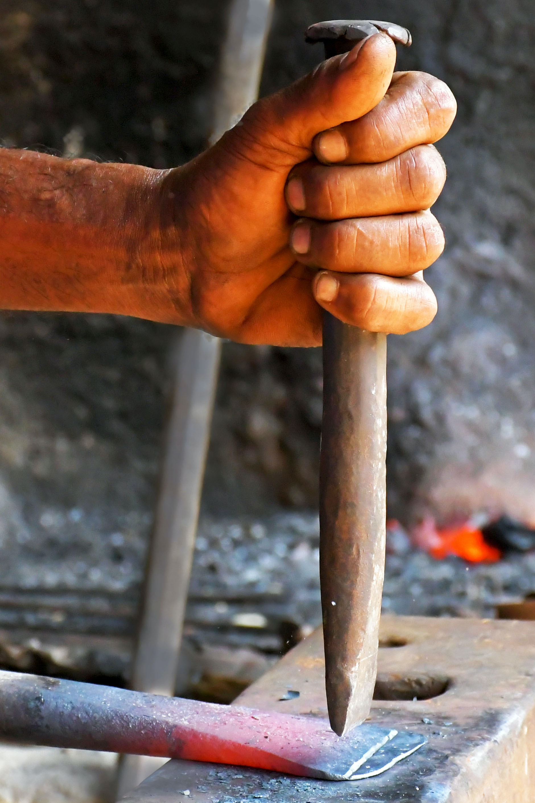
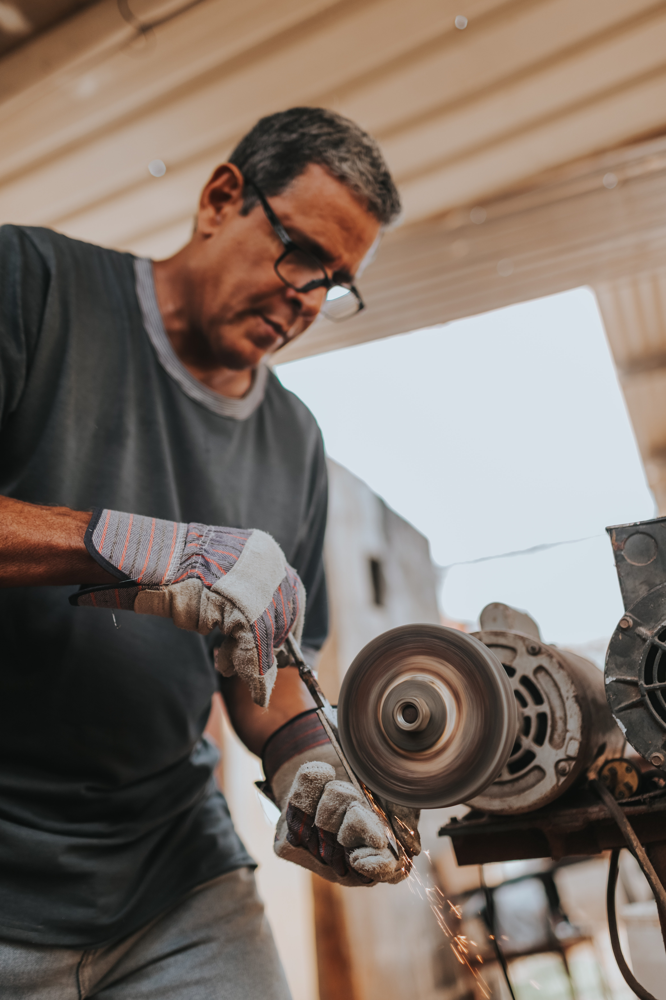

Redford blacksmithing is a local, family-owned workshop based in Burbeon, Tennessee. We've been in business for over 50 years, passing our trade from father to son, and we aim to set the standard for quality, whatever the piece.

We are now offering classes, as well as taking apprentices! take a look at our classes page or contact us for more details!
We are proud to be experienced in all kinds of metalwork, and we are capable of almost any creation you can think of! take a look at our Products page.
We love to take special orders! See our Custom Work page for more details.